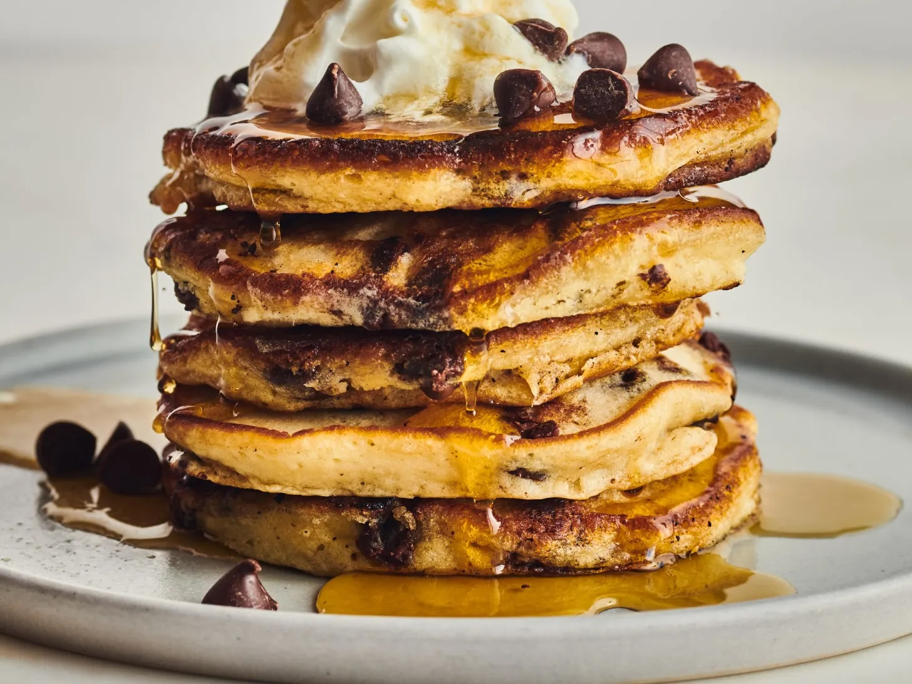

Home
Chocolate Chip Pancakes

Description
Chocolate Chip pancakes are the perfect breakfast for you and your loved
ones.
Enjoy this delicious recipe made with love!
Ingredients
- 1 1/4 cups all-purpose flour
- 1 cup semi-sweet chocolate chips, plus more for serving
- 1 tablespoon granulated sugar
- 2 teaspoons baking powder
- 1/2 teaspoon baking soda
- 1/2 teaspoon kosher salt
- 4 tablespoons unsalted butter, divided, plus more for serving
- 1 1/4 cups buttermilk
- 2 large eggs
Steps
- Heat the oven to 225°F Arrange a rack in the middle of the oven. Fit a wire rack inside a rimmed baking sheet and place on the rack. Heat the oven to 225°F.
- Mix the dry ingredients. Place 1 1/4 cups all-purpose flour, 1 cups semi-sweet chocolate chips, 1 tablespoon granulated sugar, 2 teaspoons baking powder, 1/2 teaspoon baking soda, and 1/2 teaspoon kosher salt in a large bowl and whisk to combine.
- Melt the butter. Microwave 2 tablespoons of the unsalted butter in a medium microwave-safe bowl in 10-second bursts until melted, 30 to 40 seconds.
- Mix the wet ingredients.Add 1 1/4 cups buttermilk to the melted butter. Separate 2 large eggs, placing the egg whites in the measuring cup used for the buttermilk and the egg yolks in the bowl of melted butter. Whisk the egg yolks into the butter until combined.
- Combine the wet and dry ingredients. Pour the buttermilk mixture into the flour mixture and stir with a spatula until most of the flour is moistened.
- Fold in egg whites and let the batter rest. Add the egg whites and fold in just until incorporated, but do not overmix. Set the batter aside to rest for 10 minutes.
- Melt the butter in the pan. Cut the remaining 2 tablespoons unsalted butter into 4 pieces. Heat a large nonstick or cast iron skillet to medium heat, or an electric griddle to 350°F. Add one of the pieces of butter and swirl to coat the pan in melted butter
- Add the pancake batter. Use an ice cream scoop (about 3 tablespoons) to drop the batter into the skillet (or use a scant 1/4 cup each), about 4 pancakes will fit in a 12-inch skillet.
- Cook until bubbles pop and the edges appear dry. TheThe batter will spread into a 4- to 5-inch-wide round. Cook for about 2 to 3 minutes. When the bubbles that form on the edges of the pancakes pop and the edges appear dry, use a thin spatula to gently lift one side and peek underneath.
- Flip the pancakes. If the pancake is golden-brown, flip and cook until the second side is lightly browned, about 2 minutes more.
- Keep the pancakes warm in the oven. Transfer the pancakes to the baking sheet in the oven. Continue cooking the remaining batter, adding more butter to the pan if it appears dry.
- Serve the pancakes.Serve the pancakes as soon as possible with whipped cream and more chocolate chips or butter and maple syrup.